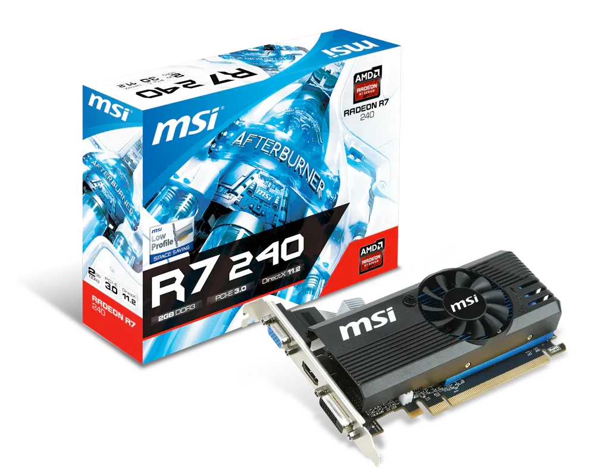
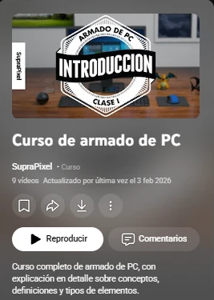
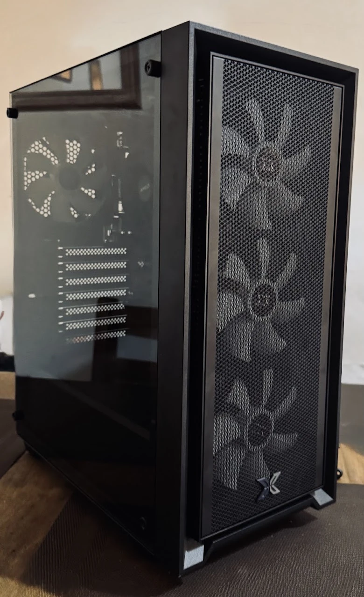
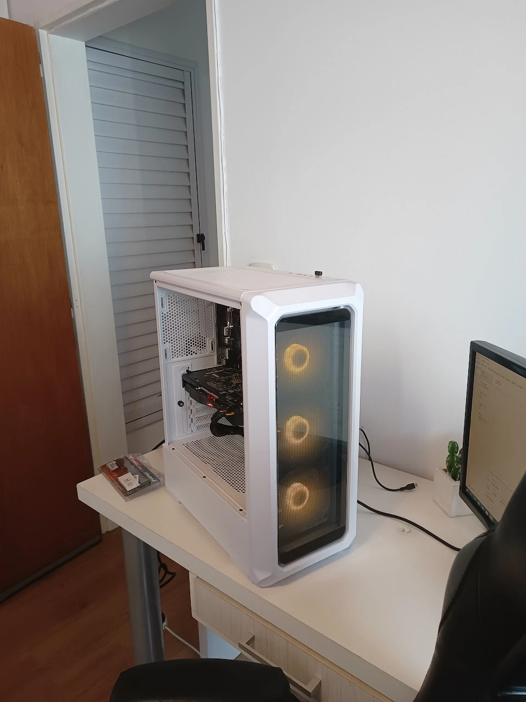
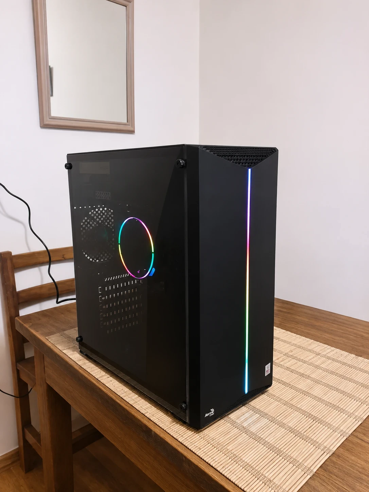
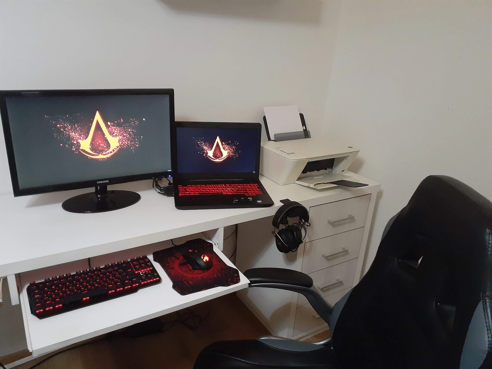
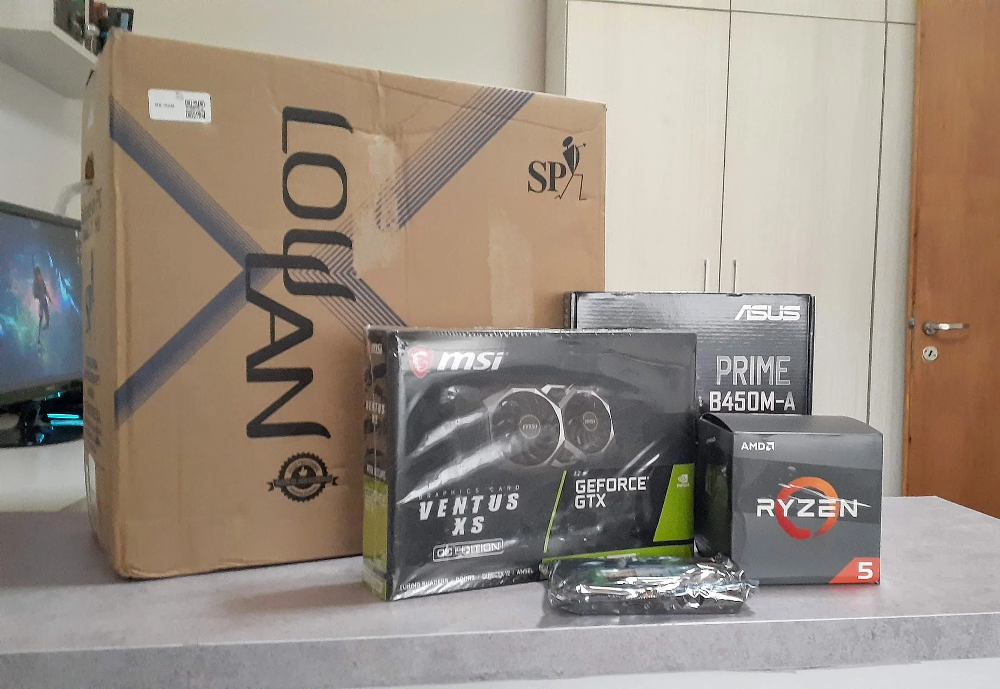
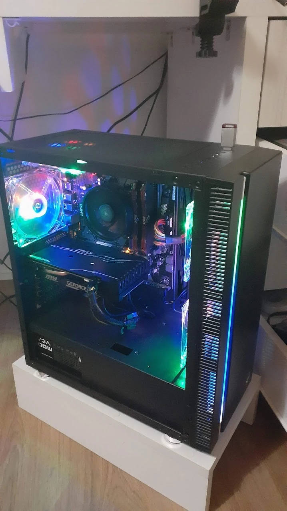
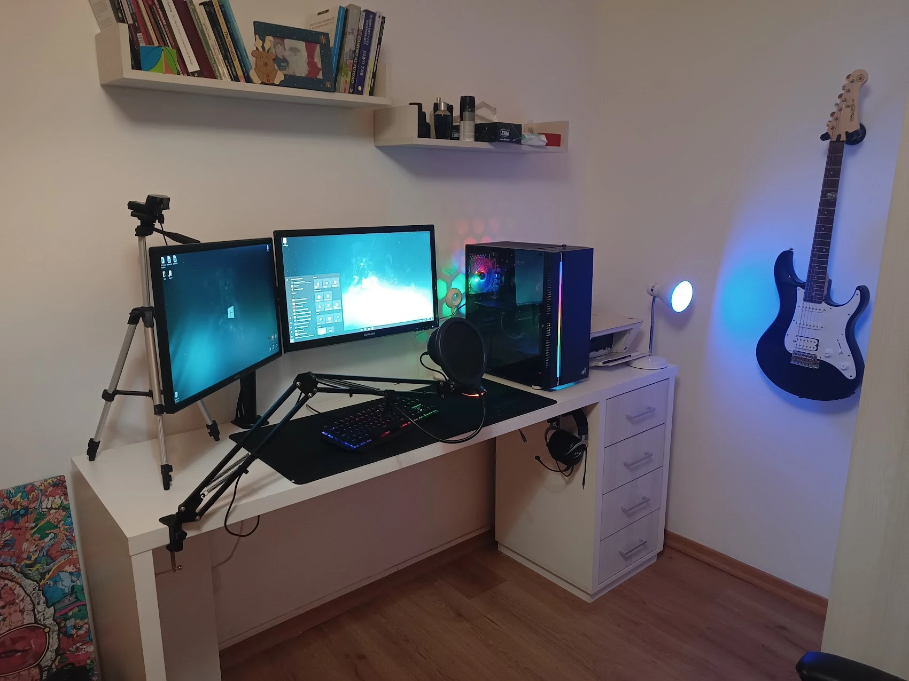
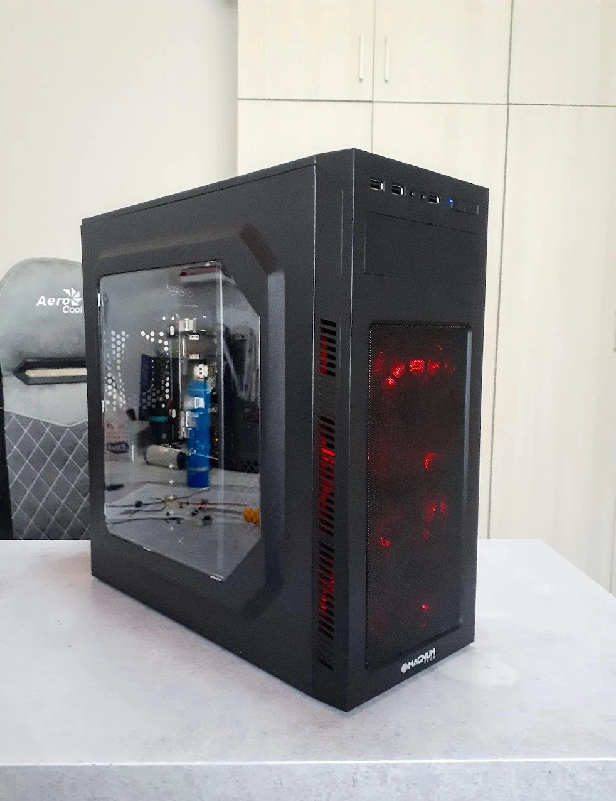

My life in PCs, from the start
How I started building PCs, and every one I built along the way.
Overwatch and a PC that never ran it

I started building PCs because I wanted to play Overwatch and my PC couldn't run it. Paying a technician wasn't an option.
My dad had bought me a PC with an AMD Radeon R7 240. It was what we could afford, but it wasn't enough for the game, so I decided to learn how to upgrade it myself.
Nine classes on YouTube

I found SupraPixel's PC building course on YouTube and watched the nine classes, from choosing parts to installing Windows.
After that I bought an RX 570, installed it myself, and Overwatch finally ran.
Then everyone else's
Then I built my dad's PC, my brother's and my cousin's.



My dad started recommending me to his friends and their kids, and my brother to his friends. At some point I was charging for it.
The one that got stolen
My RX 570 ended up in a build of my own: a Ryzen 3 2200G with an Aorus RX 570 I had barely managed to buy from a guy who used it for mining, 16 GB of DDR4 and an EVGA 500 W power supply.




Someone broke into my house and stole it.
The next day my uncle gave me a gaming laptop. I preferred a PC, so I sold the laptop and used the money for the next build: a GTX 1660 Super, a Ryzen 5 and an ASUS PRIME B450M-A. (Selling that laptop also started a side business, but that's another story.)
That PC lasted six years. This is my room in March 2023, with it on the desk, the Coradir monitor and a Blue Snowball on its arm.
My first big job
My first big job was for Corven. They had a real race car set up as a driving simulator: you sit in the cockpit and drive on a screen.


I built the PC that runs it.
Today
I ended up working in data, not hardware, but I still build PCs. The latest one is my own white build, the one where I ended up flashing a BIOS by hand.